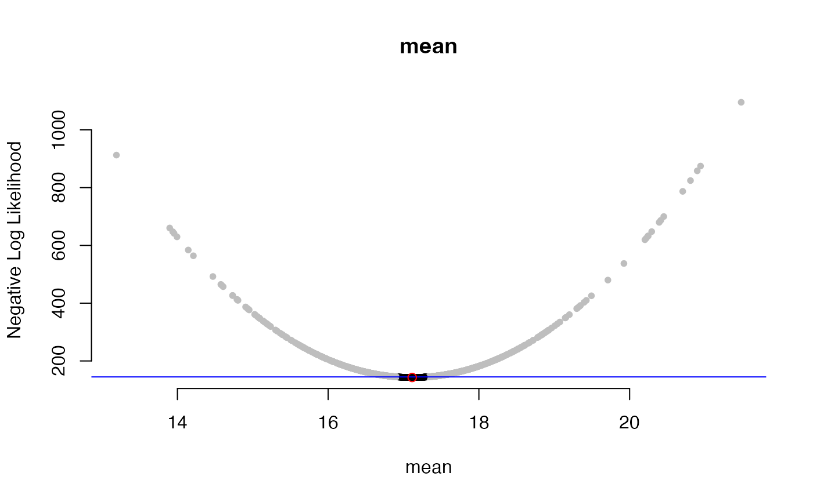
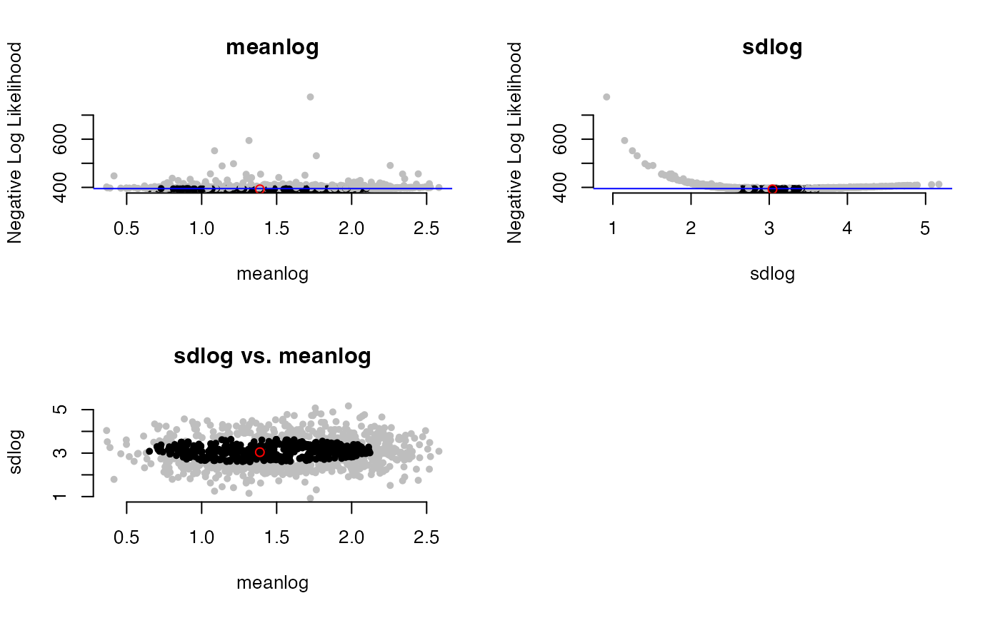

dent_walk.RdWhile running, it will display the current range of likelihoods in the desired range (by default, the best negative log likelihood + 2 negative log likelihood units) and the parameter values falling in that range. If things are working well, the range of values will stabilize during a search.
dent_walk( par, fn, best_neglnL, delta = 2, nsteps = 1000, print_freq = 50, lower_bound = 0, upper_bound = Inf, ... )
| par | Starting parameter vector, generally at the optimum. If named, the vector names are used to label output parameters. |
|---|---|
| fn | The likelihood function, assumed to return negative log likelihoods |
| best_neglnL | The negative log likelihood at the optimum; other values will be greater than this. |
| delta | How far from the optimal negative log likelihood to focus samples |
| nsteps | How many steps to take in the analysis |
| print_freq | Output progress every print_freq steps. |
| lower_bound | Minimum parameter values to try. One for all or a vector of the length of par. |
| upper_bound | Maximum parameter values to try. One for all or a vector of the length of par. |
| ... | Other arguments to fn. |
A dentist object containing results, the data.frame of negative log likelihoods and the parameters associated with them; acceptances, the vector of whether a proposed move was accepted each step; best_neglnL, the best value passed into the analysis; delta, the desired offset; all_ranges, a summary of the results.
The algorithm tunes: if it is moving too far away from the desired likelihoods, it will decrease the proposal width; if it staying in areas better than the desired likelihood, it will increase the proposal width. It will also expand the proposal width for parameters where the extreme values still appear good enough to try to find out the full range for these values.
In general, the idea of this is not to give you a pleasingly narrow range of possible values -- it is to try to find the actual uncertainty, including finding any ridges that would not be seen in univariate space.
# Univariate case sims <- stats::rnorm(100, mean=17) possible_means <- seq(from=16, to=18, length.out=100) # for optimize # Make sure we have a function that takes in a parameters vector, other arguments if needed, # and returns the negative log likelihood dnorm_to_run <- function(par, sims) { return(-sum(stats::dnorm(x=sims, mean=par, log=TRUE))) } optimized_results <- stats::optimize(dnorm_to_run,interval=range(possible_means), sims=sims, maximum=FALSE) best_par <- optimized_results$minimum names(best_par) <- "mean" best_neglnL <- optimized_results$objective dented_results <- dent_walk(par=best_par, fn=dnorm_to_run, best_neglnL=best_neglnL, sims=sims)#> [1] "Done replicate 50" #> [1] "CI of values" #> X1 X2 #> [1,] 142.8176 16.94008 #> [2,] 144.3450 17.11486 #> [1] "Done replicate 100" #> [1] "CI of values" #> X1 X2 #> [1,] 142.8176 16.94008 #> [2,] 144.3450 17.27031 #> [1] "Done replicate 150" #> [1] "CI of values" #> X1 X2 #> [1,] 142.8176 16.91646 #> [2,] 144.7857 17.29818 #> [1] "Done replicate 200" #> [1] "CI of values" #> X1 X2 #> [1,] 142.8176 16.91646 #> [2,] 144.7857 17.29818 #> [1] "Done replicate 250" #> [1] "CI of values" #> X1 X2 #> [1,] 142.8176 16.91646 #> [2,] 144.7857 17.31195 #> [1] "Done replicate 300" #> [1] "CI of values" #> X1 X2 #> [1,] 142.8176 16.91646 #> [2,] 144.7857 17.31195 #> [1] "Done replicate 350" #> [1] "CI of values" #> X1 X2 #> [1,] 142.8176 16.91646 #> [2,] 144.7857 17.31195 #> [1] "Done replicate 400" #> [1] "CI of values" #> X1 X2 #> [1,] 142.8176 16.91646 #> [2,] 144.7857 17.31195 #> [1] "Done replicate 450" #> [1] "CI of values" #> X1 X2 #> [1,] 142.8176 16.91646 #> [2,] 144.7857 17.31195 #> [1] "Done replicate 500" #> [1] "CI of values" #> X1 X2 #> [1,] 142.8176 16.91646 #> [2,] 144.7857 17.31195 #> [1] "Done replicate 550" #> [1] "CI of values" #> X1 X2 #> [1,] 142.8176 16.91646 #> [2,] 144.7857 17.31195 #> [1] "Done replicate 600" #> [1] "CI of values" #> X1 X2 #> [1,] 142.8176 16.91646 #> [2,] 144.7857 17.31195 #> [1] "Done replicate 650" #> [1] "CI of values" #> X1 X2 #> [1,] 142.8176 16.91646 #> [2,] 144.7857 17.31195 #> [1] "Done replicate 700" #> [1] "CI of values" #> X1 X2 #> [1,] 142.8176 16.91646 #> [2,] 144.7857 17.31195 #> [1] "Done replicate 750" #> [1] "CI of values" #> X1 X2 #> [1,] 142.8176 16.91646 #> [2,] 144.7857 17.31195 #> [1] "Done replicate 800" #> [1] "CI of values" #> X1 X2 #> [1,] 142.8176 16.91646 #> [2,] 144.7857 17.31195 #> [1] "Done replicate 850" #> [1] "CI of values" #> X1 X2 #> [1,] 142.8176 16.91646 #> [2,] 144.7857 17.31195 #> [1] "Done replicate 900" #> [1] "CI of values" #> X1 X2 #> [1,] 142.8176 16.91646 #> [2,] 144.7857 17.31195 #> [1] "Done replicate 950" #> [1] "CI of values" #> X1 X2 #> [1,] 142.8176 16.91646 #> [2,] 144.7857 17.31195 #> [1] "Done replicate 1000" #> [1] "CI of values" #> X1 X2 #> [1,] 142.8176 16.91646 #> [2,] 144.7857 17.31195# Multivariate case sims <- stats::rlnorm(100, meanlog=1, sdlog=3) dlnorm_to_run <- function(par, sims) { return(-sum(stats::dlnorm(sims, meanlog=par[1], sdlog=par[2], log=TRUE))) } optimized_results <- stats::optim(c(meanlog=.9, sdlog=2.9), dlnorm_to_run, sims=sims) best_par <- optimized_results$par best_neglnL <- optimized_results$value dented_results <- dent_walk(par=best_par, fn=dlnorm_to_run, best_neglnL=best_neglnL, sims=sims)#> [1] "Done replicate 50" #> [1] "CI of values" #> X1 X2 X3 #> [1,] 268.2921 0.2068242 2.556481 #> [2,] 269.8236 0.3038519 3.234847 #> [1] "Done replicate 100" #> [1] "CI of values" #> X1 X2 X3 #> [1,] 268.2921 0.2068242 2.556481 #> [2,] 270.2878 0.5637017 3.264929 #> [1] "Done replicate 150" #> [1] "CI of values" #> X1 X2 X3 #> [1,] 268.2921 0.2068242 2.556481 #> [2,] 270.2878 0.6464737 3.264929 #> [1] "Done replicate 200" #> [1] "CI of values" #> X1 X2 X3 #> [1,] 268.2921 0.2068242 2.556481 #> [2,] 270.2878 0.7636026 3.264929 #> [1] "Done replicate 250" #> [1] "CI of values" #> X1 X2 X3 #> [1,] 268.2921 0.2068242 2.556481 #> [2,] 270.2878 0.7636026 3.264929 #> [1] "Done replicate 300" #> [1] "CI of values" #> X1 X2 X3 #> [1,] 268.2921 0.2068242 2.552081 #> [2,] 270.2878 0.7636026 3.268584 #> [1] "Done replicate 350" #> [1] "CI of values" #> X1 X2 X3 #> [1,] 268.2921 0.2068242 2.551342 #> [2,] 270.2878 0.7636026 3.277517 #> [1] "Done replicate 400" #> [1] "CI of values" #> X1 X2 X3 #> [1,] 268.2921 0.1035665 2.551342 #> [2,] 270.2878 0.7636026 3.277517 #> [1] "Done replicate 450" #> [1] "CI of values" #> X1 X2 X3 #> [1,] 268.2921 0.01948244 2.551342 #> [2,] 270.2878 0.76360256 3.292424 #> [1] "Done replicate 500" #> [1] "CI of values" #> X1 X2 X3 #> [1,] 268.2921 0.01948244 2.551342 #> [2,] 270.2878 0.76360256 3.303988 #> [1] "Done replicate 550" #> [1] "CI of values" #> X1 X2 X3 #> [1,] 268.2921 0.01948244 2.526595 #> [2,] 270.2878 0.76360256 3.303988 #> [1] "Done replicate 600" #> [1] "CI of values" #> X1 X2 X3 #> [1,] 268.2921 0.01948244 2.526595 #> [2,] 270.2878 0.76360256 3.327555 #> [1] "Done replicate 650" #> [1] "CI of values" #> X1 X2 X3 #> [1,] 268.2921 0.00179944 2.526595 #> [2,] 270.2878 0.76360256 3.327555 #> [1] "Done replicate 700" #> [1] "CI of values" #> X1 X2 X3 #> [1,] 268.2921 0.00179944 2.526595 #> [2,] 270.2878 0.76360256 3.327555 #> [1] "Done replicate 750" #> [1] "CI of values" #> X1 X2 X3 #> [1,] 268.2921 0.00179944 2.526595 #> [2,] 270.2878 0.76360256 3.327555 #> [1] "Done replicate 800" #> [1] "CI of values" #> X1 X2 X3 #> [1,] 268.2921 0.00179944 2.526595 #> [2,] 270.2878 0.76360256 3.327555 #> [1] "Done replicate 850" #> [1] "CI of values" #> X1 X2 X3 #> [1,] 268.2921 0.00179944 2.526595 #> [2,] 270.2878 0.76360256 3.327555 #> [1] "Done replicate 900" #> [1] "CI of values" #> X1 X2 X3 #> [1,] 268.2921 0.00179944 2.526595 #> [2,] 270.2878 0.76360256 3.327555 #> [1] "Done replicate 950" #> [1] "CI of values" #> X1 X2 X3 #> [1,] 268.2921 0.00179944 2.526595 #> [2,] 270.2878 0.76360256 3.327555 #> [1] "Done replicate 1000" #> [1] "CI of values" #> X1 X2 X3 #> [1,] 268.2921 0.00179944 2.526595 #> [2,] 270.2878 0.76360256 3.327555